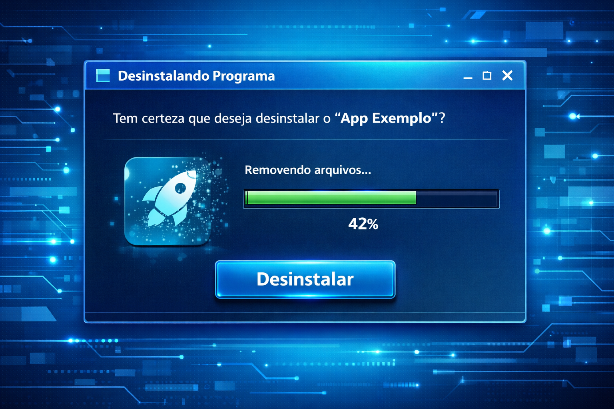
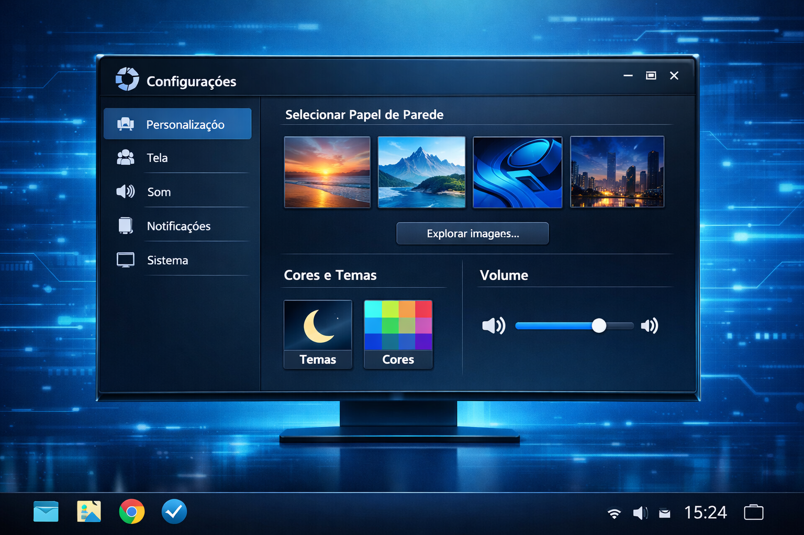
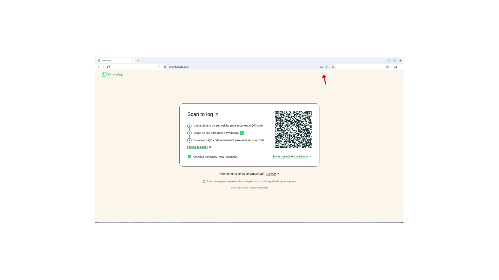
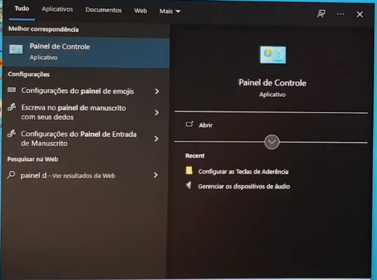
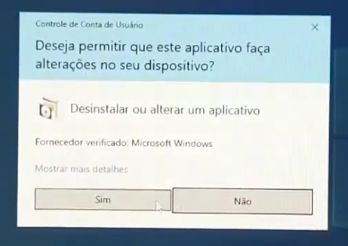

O que é Software?
Software é a parte lógica do computador. São os programas e sistemas que fazem o hardware funcionar.

Sistema Operacional
É o programa principal do computador. No nosso caso, o Windows.

Programas
São aplicativos como navegador, editor de texto e jogos.

Instalar Programas
É o processo de adicionar novos aplicativos ao computador.

Desinstalar Programas
Remover programas que não são mais necessários.

Personalização
Trocar papel de parede, ajustar volume, idioma e configurações.
Passo a Passo no Windows
Como instalar um programa
1. Baixe o instalador no site oficial.

2. Dê dois cliques no arquivo baixado.
3. Clique em "Avançar" até concluir.
Como desinstalar um programa
1. Abra o "Painel de Controle".

2. Clique em "Programas e Recursos".

3. Selecione o programa e clique em "Desinstalar".

Configurações do Sistema
1. Pressione as teclas "Windows + I" para abrir as Configurações.

sistemas
é onde você pode ajustar as configurações do seu computador.
bluetooth
é onde você pode conectar dispositivos sem fio, como fones de ouvido e mouses.
rede & internet
é onde você pode gerenciar as configurações de rede e internet.
personalização
é onde você pode personalizar a aparência do seu computador, como papel de parede, temas e cores.
aplicativos
é onde você pode gerenciar os aplicativos instalados no seu computador.
contas
é onde você pode gerenciar as contas de usuário e as opções de login.
hora e idioma
é onde você pode ajustar as configurações de data, hora e idioma do seu computador.
facilidade de acesso
é onde você pode configurar opções de acessibilidade para facilitar o uso do computador para pessoas com deficiências.
privacidade e segurança
é onde você pode gerenciar as configurações de privacidade e segurança do seu computador.
atualizações e manutenção
é onde você pode gerenciar as atualizações do sistema e realizar tarefas de manutenção.
obs
As configurações do sistema podem variar dependendo da versão do Windows que você está utilizando.
É importante manter essas configurações atualizadas para garantir o bom funcionamento do seu computador.